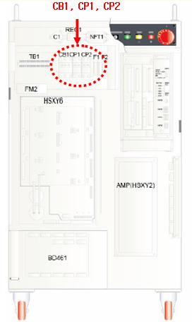

2.1. 개요
과부하에 의해서 220V전원용 회로보호기가 차단되었습니다. 제어기 상단의 회로보호기를 복구하십시오. 복구 후에도 계속적인 에러가 발생한다면 시퀀스보드를 교체하십시오. 그래도 문제가 해결되지 않을 경우에는 내부적으로 단락이 발생한 것이므로 당 사에 문의하여 조치하십시오.
2.2. 원인 및 점검 방법
| 1. 회로보호기를 복구하십시오. |
| 2. 계속적인 문제가 발생할 경우 |
| 2.1 시퀀스보드 또는 IO보드를 교체하십시오. |
| 2.2 당 사에 문의하여 조치하십시오. |
1. 회로보호기를 복구하십시오.

2. 계속적인 문제가 발생할 경우
1) 시퀀스보드를 교체하십시오.
2) IO보드를 교체하십시오.
3) 당 사에 문의하여 조치하십시오